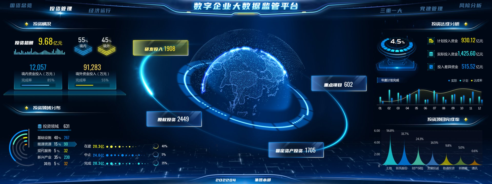

NAVIGATION / IA
六个业务域平铺顶栏，不藏入多级菜单。
问题：业务域并列，多级下钻会增加寻找主题的路径。
选择：六个模块固定在顶栏，一屏一主题，切换即换屏；标题条和底部署款维持固定位置。
取舍：顶栏占用画面高度，单屏信息密度较高；换来主题位置稳定、模块切换更直接。
数字企业大数据监管平台 · 国资监管场景大屏可视化。围绕国资总览、投资管理、经济运行、三重一大、党建管理、风险分析六个并列主题，在 1920×720 画布中建立稳定框架，并让各主题以不同的中心视觉载体表达业务语义。

01 / 国资总览 · 原始项目界面六个业务域信息类型不同，但采用一致的顶栏导航、标题条、底部署款和蓝色科技视觉；主题差异主要由中央主视觉与两侧数据模块承载。
主题名称与内容均来自现有六张大屏。点击主题卡片可直接切换下方真实界面，不额外虚构业务模块。
原始六屏反映出三个相互牵制的设计问题：主题入口深度、中央视觉辨识度，以及跨屏框架的一致性。
平台以六个顶栏主题并列呈现国资监管相关信息。每个主题由不同类型的数据构成：有总量和占比，有趋势和进度，有事项与会议统计，也有风险维度与债务明细。设计需要在固定画布内同时保证整体识别和主题差异。
因此，页面不采用六套完全不同的布局，也不把所有页面压成相同的图表模板，而是在统一框架内替换具有主题语义的中心视觉与数据组合。
六个模块同排固定在顶栏；标题条与底部署款位置跨屏保持一致。
地球、数据光柱、四立方体、党旗五角星和盾牌分别承担不同主题语义。
深蓝底、青蓝描边、金色点缀和统一光效构成共同视觉底座。
以原始 1920×720 截图为主证据。保持 8:3 宽屏比例完整呈现，不裁切标题栏、图表和底部署款；点击大图可放大查看。
以地球作为全局中心载体，左右两侧分别组织投资情况、领域分布、投入趋势与项目完成情况等信息。
从原项目说明中提炼的设计判断。每个决策保留了收益与代价，避免只描述“做了什么”。
问题：业务域并列，多级下钻会增加寻找主题的路径。
选择：六个模块固定在顶栏，一屏一主题，切换即换屏；标题条和底部署款维持固定位置。
取舍：顶栏占用画面高度，单屏信息密度较高；换来主题位置稳定、模块切换更直接。
问题：统一使用地球虽然省资产，但会削弱主题辨识；完全自由又容易形成六套风格。
选择：地球、数据光柱、四立方体、党旗五角星、盾牌分别承载相应主题。
取舍：需要维护多套中心视觉资产；换来不同主题一眼可辨，同时保留统一外框。
问题：六种主题图形差异较大，缺少恒定元素会让平台失去整体感。
选择：统一深蓝背景、青蓝霓虹描边、金色点缀、标题条和底部署款，只替换中心载体与数据模块。
取舍：单个主题的视觉自由度受到约束；换来跨屏一致辨识与整体平台感。
从六张实际画面归纳可见的信息表达方式。以下是图面类型总结，不代表额外新增的业务指标。
风险分析屏不是只放一个盾牌：左侧有预警变化趋势和行业预警分析，中间以盾牌建立风险主题识别，右侧组合财务能力雷达与债务偿还信息。抽象风险评价与精确到期值并置，既保留整体态势，也保留明细查询线索。
下面将现有界面反复出现的结构关系抽象为一张系统图，方便面试官理解你的视觉规范能力。
平台名称、顶栏模块位置、标题条、底部署款和整体描边语言。
中心主视觉载体、两侧数据区内容、指标组合与图表类型。
青蓝描边、深色背景、金色重点提示与统一的模块层级。
深海军蓝作底、青蓝用于结构和数据强调、金色用于重点数值。色值为基于截图的展示建议，最终以原始设计源文件为准。
国资总览 / 投资管理，共用全球化总览语义。
经济运行，表达数据汇聚与经济运行态势。
三重一大，对应四类重大事项。
党建管理，建立鲜明的党建主题识别。
风险分析，以防护意象承载预警主题。
项目资料目前能支持的是设计产出与页面结构事实。项目周期、个人职责边界和真实业务指标仍需由你补充。